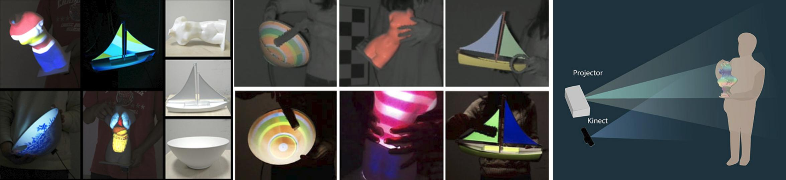

Research
Autonomous 3D Avatars
This project is about making 3D Avatars move automatically. The topics that I have been looking into are complex human motion synthesis and motion planning using deep learning and the continuity problem in the motion representations in deep neural networks.
Publications:
ON THE CONTINUITY OF ROTATION REPRESENTATIONS IN NEURAL NETWORKS
Yi Zhou*, Connelly Barnes*, Jingwan Lu, Jimei Yang, Hao Li
CVPR 2019 [paper] [project page]
AUTO-CONDITIONED LSTM NETWORK FOR EXTENDED COMPLEX HUMAN MOTION SYNTHESIS
Yi Zhou*, Zimo Li*, Shuangjio Xiao, Chong He, Zeng Huang, Hao Li
ICLR 2018
[paper]
[video]
Hair
The project is about finding the deep representation for 3D hair geometries and automatically tracking and reconstructing human hairs from single or multi-view cameras. We designed the first deep neural neural network that can fastly infer high-resolution 3D hairs. We also provide an open-source [dataset] that contains 40 thousand synthetic hair models.
Publication:
SINGLE-VIEW HAIR RECONSTRUCTION USING CONVOLUTIONAL NEURAL NETWORKS
Yi Zhou, Liwen Hu, Jun Xing, Weikai Chen, Han-Wei Kung, Xin Tong, Hao Li
ECCV 2018 [paper] [video]

Face
The project is about Track the expressions and textures of the face from videos, then synthesize new facial images and video with given expressions, e.g. swap the face between two videos.
Publication:
REALISTIC DYNAMIC FACIAL TEXTURES FROM A SINGLE IMAGE USING GANS
Kyle Olszewski, Zimo Li, Chao Yang, Yi Zhou, Ronald Yu, Zeng Huang, Sitao Xiang, Shunsuke Saito, Pushmeet Kohli, Hao Li
ICCV 2017 [paper] [video] [additional materials]

Augmented Reality
Inspired by the hologram system in manga "Psycho Pass" I design the Pmomo (projection mapping on movable object) system to create the phantasm of real-world objects being covered with virtual exteriors. As supporting 6-DOF object motion, the system can keep tracking the object and projecting 3D texture on its surface in real-time. Meanwhile, occlusions are culled from projection as to improve the sense of realism. In the picture left, the models held in the user' hands were originally white but now rendered with vivid textures by projection.
For watching the demonstration videos: [preview] [surprise] [demo]
Publication:
PMOMO: PROJECTION MAPPING ON MOVABLE 3D OBJECT
Yi Zhou, Shuangjiu Xiao, Ning Tang, Zhiyong Wei, Xu Chen
CHI 2016 [paper]

Project
Get&Put
It is a cloud powered magic that enable users to grab pictures and music directly from the screen, carrying around the data and put them 'into' other smart devices. Through hand commands, the files are transferred from device-to-device without any extra equipment. For watching the videos: [fun] [child] [demo]
It won the Global 3rd place of 2013 Imagine Cup - Azure Challenge and the 3rd place of 2013 Imagine Cup - Mail. Ru Awards
Clio Super Painter
Clio is an android app that makes painting a new way of communication. It allows users to do synchronous painting and picture transmission on more than three Android devices via Wi-Fi and Bluetooth. To make it more fun, Clio also generates special effects when 'telepathy' happens between the users.
For downloading the apps and watching the videos:
[short] [fun]
It won the Global 1st place of 2012 Ericsson Application Awards
Human Motion Recognition Based on Joint Motion Image
In the field of human motion recognition methods, the objective of this research is to transform motions into images and accurately recognize the motion images, under very small training sets.
Performance-based 3D Cartoon Facial Animation Control
I developed this software to create a windows application that can make the avatars follow the facial and body actions of the users in real time. In the left picture, I am controlling 'Sponge Bob' to perform funny actions of nodding and laughing. My method is building several key facial expression models, and morphing them into a new expression according to the facial coefficients tracked by Kinect.
AVAT: Automatic Visual Activity Test
AVAT is a medical application based on Kinect, and it can offer multiple self-catering vision test items, including: visual acuity test, chromatoptometry test and stereopsis vision test. It is very easy and convenient for hospital and home usage. Plus, AVAT can track the vision test results, helping the specialists to assess the change of visual condition, e.g. parents willing to monitor the vision acuity of their children. With the popularization of the AVAT system in medical institutions, schools and communities, it could solve the issue of the overloaded physical examinations in China.